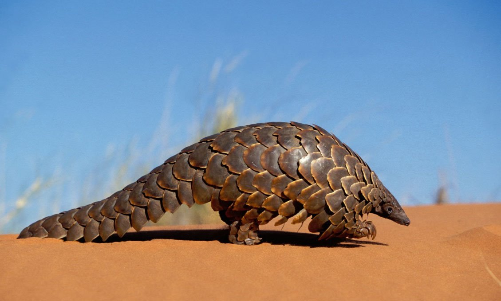
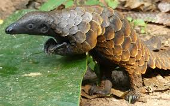

El **pangolín** (*Pholidota*) es el único mamífero cubierto completamente de grandes escamas de queratina, lo que le da una apariencia de piña andante. Existen ocho especies de pangolines distribuidas en Asia y África. Son animales nocturnos y su dieta consiste principalmente en hormigas y termitas, que capturan con su larga y pegajosa lengua. Lamentablemente, todos los pangolines están clasificados como **Vulnerables o en peligro crítico de extinción**. Es considerado el **mamífero más traficado del mundo** debido a la demanda de su carne y sus escamas, usadas en la medicina tradicional asiática, a pesar de que las escamas están hechas de queratina, el mismo material que las uñas humanas.


